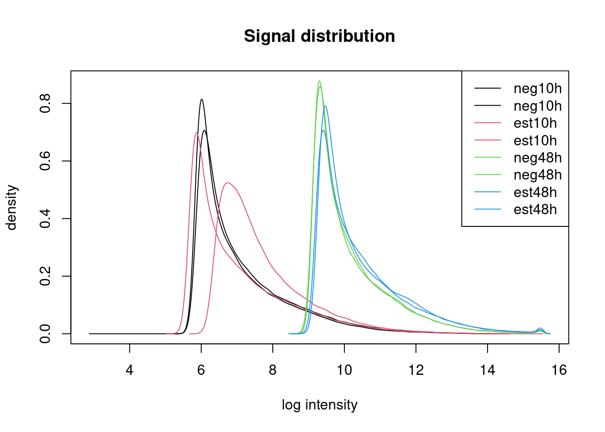
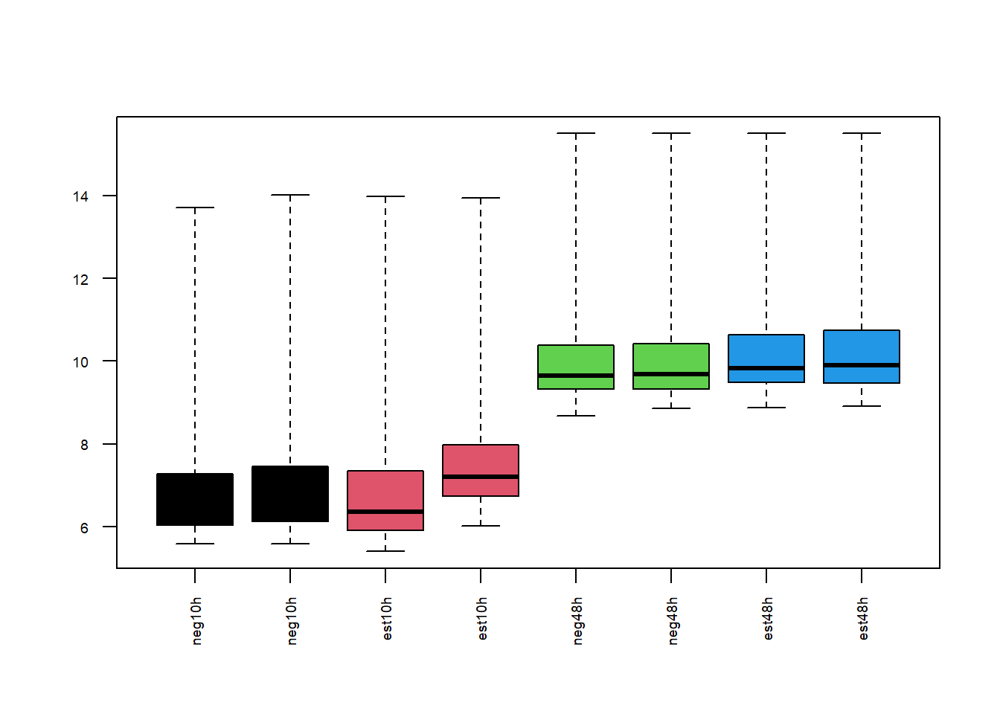
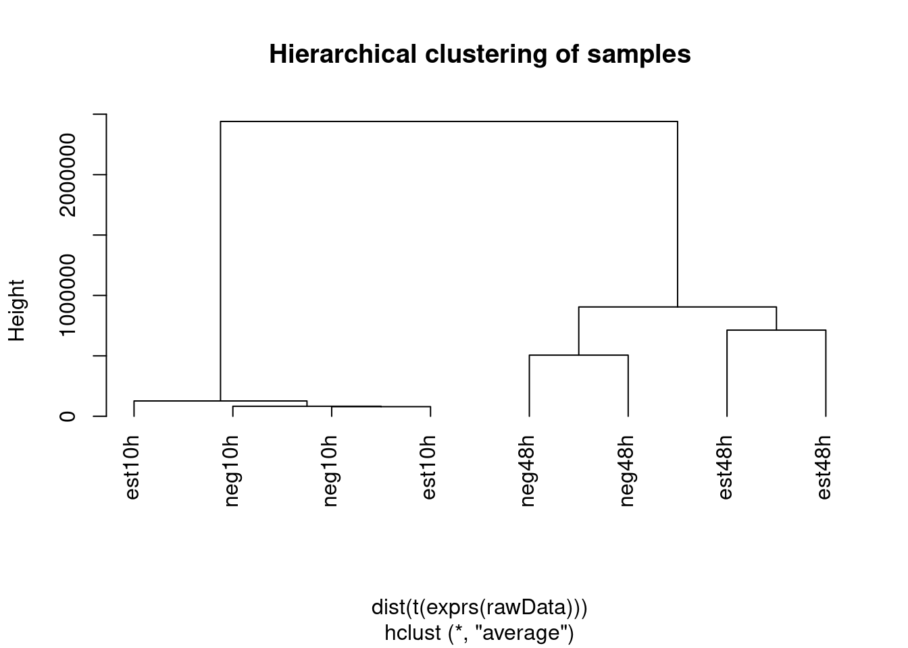
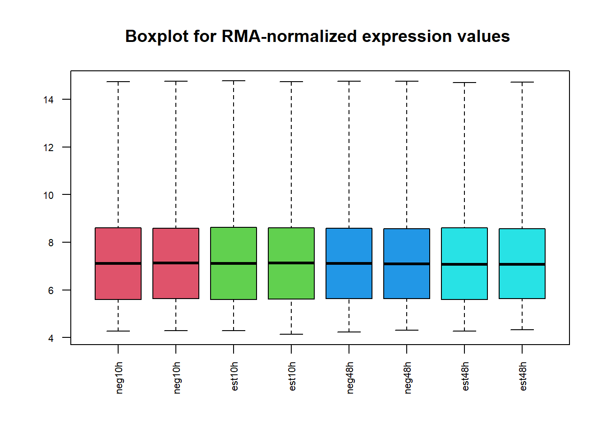

Capítulo 7 Caso “Estrógeno”: Selección de genes diferencialmente expresados asociados con la resistencia a estrógenos.
7.1 Introducción
El análisis de datos de microarrays suele proceder, en general secuencialmente, a través de una serie de etapas tal y como se comentado en capítulos anteriores.
En cada una de las etapas pueden llevarse a cabo diversos procesos, con diversas variantes de métodos parecidos.A lo largo de la primera década del 2000 se ha desarrollado el proyecto Bioconductor que ha impulsado la creación de cientos de paquetes de R que implementan casi todas las capacidades posibles de análisis de microarrays. Aunque nadie puede conocer todos los paquetes con tan sólo conocer algunos de ellos es posible llevar a cabo potentes análisis con relativa facilidad.
El objetivo de este capítulo es ilustrar de forma breve pero completa como se hace un análisis de microarrays usando las facilidades que ofrecen Bioconductor y R.
Como se ha dicho, uno de los problemas en este tipo de estudios es que en cada etapa se puede proceder de varias formas lo que da lugar a un asfixiante número de posibilidades especialmente para el neófito. Con el fin de evitar este problema de momento se describe una sola de las opciones posibles para cada paso, lo que constituye un proceso “al estilo Bioconductor”
7.2 El estudio “Estrógeno”
El ejemplo analizado consiste en unos datos disponibles en forma de paquete (estrogen) en Bioconductor. Se trata de un estudio en el que se estudia la influencia del tratamiento con estrógeno y del tiempo transcurrido desde el tratamiento en la expresión de genes asociados con cancer de mama. En capítulos anteriores se han utilizado fragmentos de este ejemplo descrito en el capítulo here en el epígrafe corresponiente a los ejemplos (ejemplo here).
El diseño experimental para este estudio consiste en un diseño factorial de 2 factores “Estrogeno” (Presente o Ausente), “Tiempo” (10h o 48h). La documentación del paquete estrogen ofrece más detalles acerca del diseño y las variables utilizadas.
Si el paquete no se encuentra instalado puede instalarse con la instrucción BiocManager::install que se descarga de la web de Bioconductor.
En lo que sigue supondremos que se ha llevado a cabo una instalación estándar de Bioconductor es decir se han ejecutado las instrucciones:
7.2.1 Directorios y opciones de trabajo
Para facilitar supondremos que trabajamos en un directorio escogido por nosotros y cuya localización se asigna a la variable workingDir. Los datos se copiaran en un subdirectorio del anterior denominado “data” que se almacenará en la variable dataDir y los resultados se almacenarán en un directorio “results” cuyo nombre completo se almacenará en la variable resultsDir.
workingDir <-getwd()
if (!file.exists("datos")) system("mkdir datos")
if (!file.exists("datos/estrogen")) system("mkdir datos/estrogen")
if (!file.exists("results")) system("mkdir results")
dataDir <-file.path(workingDir, "datos/estrogen")
resultsDir <- file.path(workingDir, "results")
setwd(workingDir)7.3 Obtención y lectura de los datos
Para un análisis de datos de microarrays de Affymetrix se necesitan los archivos de imágenes escaneadas (“.CEL”) y un archivo en el que se asigne una condición experimental a cada archivo.
7.3.1 Los datos
Una ventaja de este ejemplo es que los datos se encuentran disponibles tras instalar el paquete estrogen por lo que se pueden copiar un directorio de trabajo o simplemente trabajar con ellos en el directorio original. El directorio en que se encuentran los archivos .CEL es:
## [1] "/home/alex/R/x86_64-pc-linux-gnu-library/4.0/estrogen/extdata"Para realizar el análisis es preciso copiar todos los archivos del directorio “extdata” a nuestro directorio de trabajo “data”.
ATENCION: Esta operación que depende de la instalación y del sistema operativo. Por ejemplo para copiarlos desde R en linux se escribirá:
Los archivos copiados son
- Los ocho archivos .CEL para el análisis
- Un archivo defectuoso para que se vea como debe salir un “array malo” en el control de calidad.
- Un archivo de covariables o “targets” que se usará al leer los archivos .CEL incorporar la información de las covariables en el objeto que se creará.
7.3.2 Lectura de los datos
El proceso de leer los datos puede parecer un poco extraño a primera vista pero la idea es simple:
En primer lugar creamos algunas estructuras de datos que contienen la información sobre las variables y - opcionalmente - sobre las anotaciones y el experimento yA continuación nos basamos en estas estructuras para leer los datos y crear los objetos principales que se utilizarán para el análisis.
library(Biobase)
library(affy)
sampleInfo <- read.AnnotatedDataFrame(file.path(estrogenDir,"targLimma.txt"),
header = TRUE, row.names = 1, sep="\t")
fileNames <- pData(sampleInfo)$FileName
rawData <- read.affybatch(filenames=file.path(estrogenDir,fileNames),
phenoData=sampleInfo)En este ejemplo se incluye un archivo defectuoso con fines didácticos, llamado “badcel”. Para ilustrar las diferencias entre archivos correctos e incorrectos se puede leer en otro objeto.
7.4 Exploración, Control de Calidad y Normalización
Tras leer los datos pasamos al preprocesado. Aunque puede interpretarse de distintas formas esta fase suele consistir en
- Realizar algunos gráficos con los datos para hacerse una idea de como ha resultado el experimento.
- Realizar un control de calidad más formal.
- Normalizar y, en el caso de Affymetrix, resumir las expresiones
7.4.1 Exploración y visualización
La exploración previa puede hacerse paso a paso o en bloque si se utiliza algún paquete como arratQualityMetrics. En la ayuda de este paquete se encuentra una descripción de los análisis básicos que permite realizar.
El primer gráfico que suele hacerse és algun tipo de “densidad” que muestre la distribución de las señales en los datos “crudos”, es decir sin normalizar. Estos gráficos también permiten hacerse una idea de si las distribuciones de los distintos arrays son similares en forma y posición.

El gráfico de degradación –que no aparece en este caso, ya que daba problemeas al representarlo– permite hacerse una idea de como ha sido el proceso de hibridación de las muestras. Lineas paralelas sugieren una calidad similar.
## low10A low10B hi10A hi10B low48A low48B hi48A hi48B
## slope -0.103 -0.217 -0.129 -0.3810 -0.50400 -0.55300 -0.3510 -0.66700
## pvalue 0.550 0.194 0.394 0.0341 0.00482 0.00109 0.0464 0.00032EL código para el gráfico de degradación sería:
El diagrama de cajas muestra, como el histograma, una idea de la distribución de los datos.

Finalmente un cluster jerárquico seguido de un dendrograma nos puede ayudar a hacernos una idea de si las muestras se agrupan por condiciones experimentales.
Si lo hacen es bueno, pero si no, no es necesariamente indicador de problemas, puesto que es un gráfico basado en todo los datos.

7.4.2 Control de calidad
Las exploraciones anteriores nos proporcionan una idea de como son los datos.
Se pueden realizar controles de calidad más estrictos como:
- Los controles de calidad estándar de Affymetrix, descritos en el paquete arrayQualityMetrics.
El paquete arrayQualityMetrics encapsula unos cuantos análisis, de forma que con una instrucción se pueden realizar todos los análisis y enviar la salida a un directorio.
if(!require(arrayQualityMetrics)) BiocManager::install("arrayQualityMetrics")
library(arrayQualityMetrics)
arrayQualityMetrics(rawData, outdir = "Informe_de_calidad_para_los_datos_del_caso_ESTROGENO")
arrayQualityMetrics(rawDataBad, outdir = "Informe_de_calidad_(2)_para_los_datos_del_caso_ESTROGENO")Estos informes contienen gráficos, y explicaciones de como interpretarlos. Los gráficos llevan también indicadores para determinar si una muestra determinada puede tener algún tipo de problema.
En el código de ejemplo hemos realizado dos veces el análisis, una con los datos “buenos” y otra incluyendo el array defectuoso (“bad.cel”). Como puede verse en las tablas resumen, y en los directorios de resultados el array defectuoso es detectado por la mayoría de pruebas.
La figuras ?? y ?? presenta una tabla que resumen algunas de las pruebas (no todas) realizadas e indica si, para cada criterio, puede considerarse que un array dado es un outlier.
Para concluir con esta seccion merece la pena recordar que todos estos graficos son exploratorios. Raramente se descarta un array si solo un grafico lo sugiere.
7.4.3 Normalizacion y Filtraje
Una vez realizado el control de calidad se procede a normalizar los datos y sumarizarlos.
Hecho esto puede realizarse un filtraje no específico con el fin de eliminar genes que constituyen básicamente “ruído”, bien porque sus señales son muy bajas o bien porque apenas varían entre condiciones, por lo que no aportan nada a la selección de genes diferencialmente expresados.
La normalización puiede hacerse por distintos métodos (MAS5, VSN, RMA, GCRMA, …) En este ejemplo se utilizará el método RMA pero no se realizará filtraje alguno. Esto puede implicar quizás que para seleccionar genes diferencialmente expresados basándose en el ajuste de p-valores debamos utilizar criterios menos restrictivos que si hubiéramos filtrado, pero tiene la ventaja de eliminar un paso que, en el mejor de los casos, resulta controvertido.
El procesado mediante RMA implica un proceso en tres etapas:
- Corrección de fondo (el RMA hace precisamente esto).
- Normalización para hacer los valores de los arrays comparables.
- Summarización de las diversas sondas asociadas a cada grupo de sondas para dar un único valor.
## Background correcting
## Normalizing
## Calculating ExpressionSi se desea normalizar únicamente si los datos normalizados no estan disponibles puede utilizarse el código siguiente:
require(affy)
normalize <- T
if(normalize){
eset_rma <- rma(rawData)
save(eset_rma, file=file.path(dataDir,"estrogen-normalized.Rda"))
}else{
load (file=file.path(dataDir,"estrogen-normalized.Rda"))
}La normalización hace que los valores de los arrays sean comparables entre ellos, aunque los distintos métodos situan los valores en escalas distintas, por lo que lo que no resulta directamente comparable son los valores normalizados por distintos métodos.
Un boxplot de los valores normalizados muestra que los valores ya están en una escala en donde se pueden comparar.
Ahora bien, esto no debe considerarse sinónimo de buena calidad porque si se aplica la normalización por cuantiles el gráfico aparecerá así independientemente de otros factores que puedan afectar la calidad.
boxplot(eset_rma,main="Boxplot for RMA-normalized expression values ",
names=sampleNames, cex.axis=0.7, col=info$grupo+1,las=2)
El código siguiente, que no se ejecuta muestra como se podrían aplicar distintos métodos para lego compararlos entre ellos.
eset_mas5 <- mas5(rawData) # Uses expresso (MAS 5.0 method) much slower than RMA!
stopifnot(require(gcrma))
eset_gcrma <- gcrma(rawData) # The 'library(gcrma)' needs to be loaded first.
stopifnot(require(plier))
eset_plier <- justPlier(rawData, normalize=T) # The 'library(plier)' needs to be loaded first.
compara <-data.frame(RMA=exprs(eset_rma)[,1], MAS5 =exprs(eset_mas5)[,1],
GCRMA=exprs(eset_gcrma)[,1], PLIER =exprs(eset_plier)[,1])
pairs(compara)7.4.3.1 Filtraje
El filtraje no específico permite eliminar los genes que varían poco entre condiciones o que deseamos quitar por otras razones como por ejemplo que no disponemos de anotación para ellos. La función nsFilter permite eliminar los genes que, o bien varían poco, o bien no se dispone de anotación para ellos.
Si al filtrar deseamos usar las anotaciones, o la falta de ellas, como criterio de filtraje debemos disponer del correspondiente paquete de anotaciones.
require(genefilter)
filtered <- nsFilter(eset_rma, require.entrez=TRUE,
remove.dupEntrez=TRUE, var.func=IQR,
var.cutoff=0.5, var.filter=TRUE,
filterByQuantile=TRUE, feature.exclude="^AFFX")La función nsFilter devuelve los valores filtrados en un objeto expressionSet y un informe de los resultados del filtraje.
## [1] "eset" "filter.log"## [1] "ExpressionSet"
## attr(,"package")
## [1] "Biobase"## $numDupsRemoved
## [1] 2856
##
## $numLowVar
## [1] 4292
##
## $numRemoved.ENTREZID
## [1] 1166
##
## $feature.exclude
## [1] 19Podemos grabar el objeto eset_rma y los datos filtrados para su posterior uso.
Despues del filtraje han quedado 4409 genes disponibles para analizar.
7.5 Selección de genes diferencialmente expresados
Como en las etapas anteriores la selección de genes diferencialmente expresados (GDE) puede basarse en distintas aproximaciones, desde la \(t\) de Student al programa SAM pasando por multitud de variantes.
En este ejemplo se aplicará la aproximación presentada por Smyth et al. (2004) basado en la utilización del modelo lineal general combinada con un método para obtener una estimación mejorada de la varianza.
7.5.1 Análisis basado en modelos lineales
El capítulo 6 de tse manual o el manual del programa limma contienen explicaciones detalladas sobre construir un modelo lineal para este problema y como utilizarlo para seleccionar genes diferencialmente expresados.
7.5.1.1 Matriz de diseño
El primer paso para el análisis es crear la matriz de diseño.
La situación discutida en este ejemplo se puede modelizar de dos formas, tal como se discute en la presentación citada más arriba:
- Como un modelo de dos factores Estrogeno(Pres/Aus) Tiempo (10h/48h) con interacción.
- Como un modelo de un factor con cuatro niveles (Pres.10h/Pres.48h/Aus.10h/Aus.48h).
Tal como se describe en el manual de limma la segunda parametrización resulta a menudo más comoda, a pesar de parecer menos intuitiva, porque permite formular con más facilidad que la de dos factores las preguntas que típicamente interesan a los investigadores.
El modelo lineal para este estudio será:
\[ \left( \begin{array}{r} y_1 \\ y_2 \\ y_3 \\ y_4 \\ y_5 \\ y_6 \\ y_7 \\ y_8 \end{array} \right) = \underbrace{\left( \begin{array}{rrrr} 1 & 0 & 0 & 0\\ 1 & 0 & 0 & 0\\ 0 & 1 & 0 & 0 \\ 0 & 1 & 0 & 0 \\ 0 & 0 & 1 & 0 \\ 0 & 0 & 1 & 0 \\ 0 & 0 & 0 & 1 \\ 0 & 0 & 0 & 1 \end{array} \right)}_{\mbox{Design Matrix}, \mathbf{X}} \left( \begin{array}{c} \alpha_1 \\ \alpha_2 \\ \alpha_3 \\ \alpha_4 \end{array} \right) + \left( \begin{array}{r} \varepsilon_1 \\ \varepsilon_2 \\ \varepsilon_3\\ \varepsilon_4 \\ \varepsilon_5\\ \varepsilon_6\\ \varepsilon_7\\ \varepsilon_8 \end{array} \right) \]
Los parámetros del modelos representan las cuatro combinaciones tiempo/estrogeno.
\[\begin{array}{ccc} \alpha_1&=& \mathbf{E} (log{Abs.10h} ),\\ \alpha_2&=& \mathbf{E} (log{Pres.10h} ),\\ \alpha_3&=& \mathbf{E} (log{Abs.48h} ),\\ \alpha_4&=& \mathbf{E} (log{Pres.48h} ). \end{array}\]
La matriz de diseño puede definirse manualmente o a partir de un factor creado específicamente para ello.
Manualmente, seria:
design.1<-matrix(
c(1,1,0,0,0,0,0,0,
0,0,1,1,0,0,0,0,
0,0,0,0,1,1,0,0,
0,0,0,0,0,0,1,1),
nrow=8,
byrow=F)
colnames(design.1)<-c("neg10h", "est10h", "neg48h", "est48h")
rownames(design.1) <- c("low10A", "low10B", "hi10A" , "hi10B", "low48A", "low48B", "hi48A" , "hi48B")
print(design.1)## neg10h est10h neg48h est48h
## low10A 1 0 0 0
## low10B 1 0 0 0
## hi10A 0 1 0 0
## hi10B 0 1 0 0
## low48A 0 0 1 0
## low48B 0 0 1 0
## hi48A 0 0 0 1
## hi48B 0 0 0 1Alternativamente puede crearse la matriz de diseño a partir de la información sobre las condiciones contenida en el phenoData, siempre que exista un campo adecuado para ello.
En este caso la columna Target se ha creado para utilizarla con esta finalidad. El objeto phenoData puede recrearse a partir del archivo original o extrayéndolo del objeto ExpresionSet que contiene los datos y las covariables.
## neg10h est10h neg48h est48h
## low10A 1 0 0 0
## low10B 1 0 0 0
## hi10A 0 1 0 0
## hi10B 0 1 0 0
## low48A 0 0 1 0
## low48B 0 0 1 0
## hi48A 0 0 0 1
## hi48B 0 0 0 1
## attr(,"assign")
## [1] 1 1 1 1
## attr(,"contrasts")
## attr(,"contrasts")$lev
## [1] "contr.treatment"Ambas matrices, design, design.1 resultan iguales.
7.5.1.2 Contrastes
Dado un modelo lineal definido a traves de una matriz de diseño pueden formularse las preguntas de interes como contrastes es decir comparaciones entre los parametros del modelo.
Cada parametrizacion distinta requerira de unos contrastes diferentes para las mismas preguntas, por lo que habitualmente se utilizara la parametrizacion que permita formular de forma mas clara las comparaciones de interes.
En este caso interesa estudiar
- Efecto del estrogeno al inicio del tratamiento
- Efecto del estrogeno al cabo de un tiempo del tratamiento
- Efecto del tiempo en ausencia de estrogeno
Esto se puede formular facilmente con la parametrizacion adoptada. \[\begin{array}{ccc} \beta_1^1 &=& \alpha_2-\alpha_1,\quad \mbox{Efecto del estrogeno pasadas 10 horas} \\ \beta_2^1 &=& \alpha_4-\alpha_3,\quad \mbox{Efecto del estrogeno pasadas 48 horas} \\ \beta_3^1 &=& \alpha_3-\alpha_1,\quad \mbox{Efecto del tiempo en ausencia de Estrogeno} \end{array}\]
cont.matrix <- makeContrasts (
Estro10=(est10h-neg10h),
Estro48=(est48h-neg48h),
Tiempo=(neg48h-neg10h),
levels=design)
cont.matrix## Contrasts
## Levels Estro10 Estro48 Tiempo
## neg10h -1 0 -1
## est10h 1 0 0
## neg48h 0 -1 1
## est48h 0 1 07.5.1.3 Estimación del modelo y selección de genes
Una vez definida la matriz de diseño y los contrastes podemos pasar a estimar el modelo, estimar los contrastes y realizar las pruebas de significación que nos indiquen, para cada gen y cada comparación, si puede considerarse diferencialmente expresado.
require(limma)
fit<-lmFit(eset_rma, design)
fit.main<-contrasts.fit(fit, cont.matrix)
fit.main<-eBayes(fit.main)El método implementado en amplía el análisis tradicional utilizando modelos de Bayes empíricos para combinar la información de toda la matriz de datos y de cada gen individual y obtener estimaciones de error mejoradas.
El análisis proporciona los estadísticos de test habituales como Fold–change \(t\)-moderados o \(p\)-valores ajustados que se utilizan para ordenar los genes de mas a menos diferencialmente expresados.
A fin de controlar el porcentaje de falsos positivos que puedan resultar del alto numero de contrastes realizados simultaneamente los p–valores se ajustan de forma que tengamos control sobre la tasa de falsos positivos utilizando el metodo de Benjamini y Hochberg (Benjamini and Hochberg (1995)).
La funcion topTable genera para cada contraste una lista de genes ordenados de mas a menos diferencialmente expresados.
topTabEstro10 <- topTable (fit.main, number=nrow(fit.main), coef="Estro10", adjust="fdr")
topTabEstro48 <- topTable (fit.main, number=nrow(fit.main), coef="Estro48", adjust="fdr")
topTabTiempo <- topTable (fit.main, number=nrow(fit.main) , coef="Tiempo", adjust="fdr")Una forma de visualizar los resultados es mediante un volcano plot que representa en abscisas los cambios de expresión en escala logarítmica y en ordenadas el “menos logaritmo” del p-valor o alternativamente el estadístico \(B\).

7.5.2 Comparaciones múltiples
Cuando se realizan varias comparaciones a la vez puede resultar importante ver que genes cambian simultáneamente en más de una comparación. Si el número de comparaciones es alto también puede ser necesario realizar un ajuste de p-valores entre las comparaciones, distinto del realizado entre genes.
La función decidetests permite realizar ambas cosas. En este ejemplo no se ajustaran los p–valores entre comparaciones. Tan solo se seleccionaran los genes que cambian en una o más condiciones.
EL resultado del análisis es una tabla res que para cada gen y cada comparación contiene un 1 (si el gen esta sobre-expresado o “up” en esta condicion), un 0 (si no hay cambio significativo) o un -1 (si esta “down”-regulado).
Para resumir dicho análisis podemos contar qué filas tienen como mínimo una celda distinta de cero:
## Estro10 Estro48 Tiempo
## Down 23 99 27
## NotSig 12512 12375 12591
## Up 90 151 7Un diagrama de Venn permite visualizar la tabla anterior sin diferenciar entre genes “up” o “down” regulados.
\begin{figure}

\end{figure}